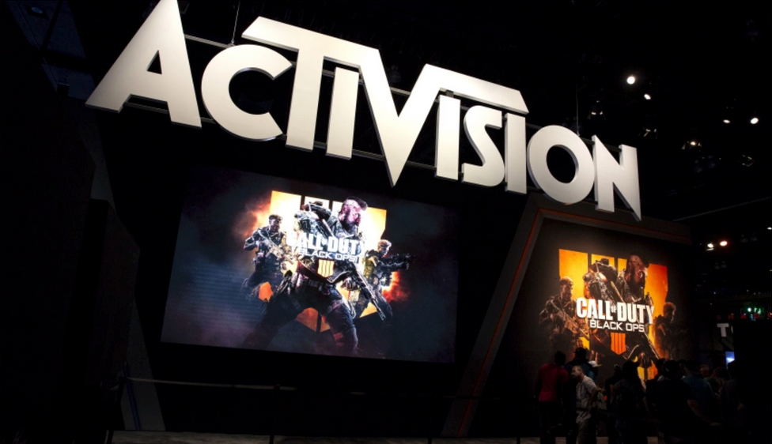

Microsoft to buy Activision Blizzard for $68.7 billion
Amanda Silberling Register today for DeFi and the Future of Programmable Money Summit
Alexandra AmesFor investors, future of work isn't only about HR
Anna HeimUpward plans to open a 250,000-square-foot vertical farm in PA early next year
Brian HeaterWayve raises $200M Series B led by Eclipse for its AI for autonomous delivery vehicles
Mike ButcherThe Lastest
Snapchat says it's getting better at finding illicit drug dealers before users do
Taylor Hatmaker 11:15 AM PST * January 18, 2022Snapchat has faced increasing criticism in recent years as the opioid crisis plays out on social media, often with tragic results. In October, an NBC investigation reported the stories of a number...
Will quantum computing remain the domain of the specialist VC?
Maria Lepskaya 11:06 AM PST * January, 2022Despite all the buzz, quantum investments are still not mainstream: there were about 90 quantum investments in 2021.
Ex-Dispo founding members launch Roll app, where creators post exclusive content
Amanda Silberling 12:00 PM CST * January 18, 2022Today marks the launch of the Roll app, which aims to create an easy way for creators to make an extra buck while portraying a potentially more authentic version of themselves to their fans. Already...